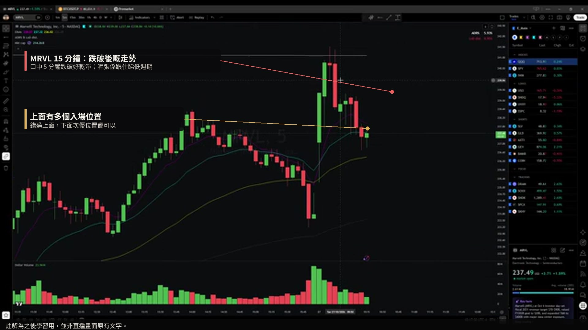
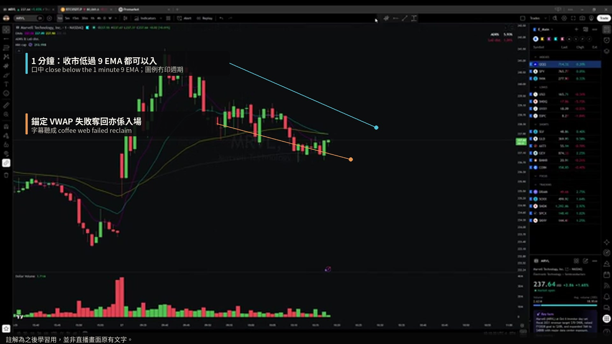

概要
日線方向定咗，再喺低週期揀入場
57:35 有人話 Marvell 日線淡倉機會不錯，但低週期搵唔到理想入場，問佢會點拆。佢同意日線睇淡幾好，並指出 5 分鐘跌破好乾淨；1 分鐘收市低過 9 EMA 可以係另一個入場，錨定 VWAP 失敗奪回亦可以。上面有好多入場，錯過咗，下面次優位置都得。
Whisper 把 Marvell 聽得清楚；1 minute 9 EMA 聽成 9 year make；anchored VWAP 聽成 coffee web。
圖一
MRVL 15 分鐘：跌破後嘅走勢
直播 58:00

原話
Marvell seems having a good short chance on the daily chart, however I can't really find an optimal entry point using lower time frames. Just wonder how you analyze this chart. Yeah, on the daily it looks pretty good on the short side. 5 minute breakdown, I think it's pretty clean. Breakdown of the 5 minute candle. Maybe even close below the 1 minute 9 EMA could be another entry, and AVWAP failed reclaim would be another entry. This one could be another entry. I think you got a lot of entries up here. If you missed the upper one, maybe you can also get these entries, the suboptimal ones down here, it's also possible.
Marvell 日線睇落有不錯嘅淡倉機會，但低週期搵唔到理想入場，想知道你會點拆呢張圖。係，日線喺淡嗰邊睇落幾好。5 分鐘跌破，我覺得好乾淨。5 分鐘 K 線嘅跌破。甚至 1 分鐘收市低過 9 EMA 都可以係另一個入場，錨定 VWAP 失敗奪回亦可以係另一個入場。呢個都可以係。我覺得上面有好多入場。如果你錯過上面嗰個，或者都可以攞呢啲下面嘅次優入場，都有可能。
Whisper 把 9 EMA 聽成 9 year make，把 anchored VWAP 聽成 coffee web。原話按語境還原，並標明聽音分歧。畫面係 Marvell Technology（MRVL）。
點樣讀
日線先定方向，低週期先至講具體入場。15 分鐘係跟住睇嘅畫面，口中明確提到嘅係 5 分鐘跌破。
畫面公司名只當圖上文字。圖例冇印週期。
圖二
1 分鐘：收市低過 9 EMA 都可以入
直播 58:30

點樣讀
呢張係口中「1 分鐘 9 EMA」同「AVWAP failed reclaim」對應嘅低週期畫面。唔好把每一種入場都寫成必須同時成立。
附註
注意事項
- 講日線睇淡時，前幾秒畫面仍喺 QQQ，之後先切到 MRVL。日線判斷以口中為準，本頁用低週期圖對應入場講法。